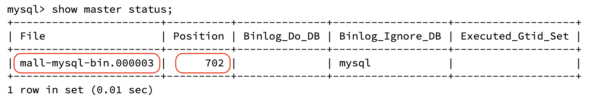
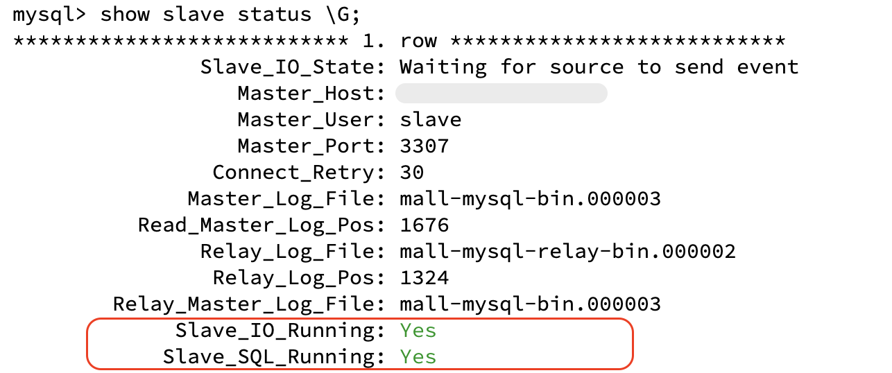

使用 Docker 分别以 单机模式 和 主从模式 运行 MySQL 8.0。
单机模式
运行容器实例
Copied!
# 根据实际情况修改HOST_DIR
docker run -d -p 3306:3306 --privileged=true \
-v ${HOST_DIR}/conf:/etc/mysql/conf.d \
-v ${HOST_DIR}/data:/var/lib/mysql \
-e MYSQL_ROOT_PASSWORD=root \
--name mysql mysql:8.0
编辑配置文件
新建配置文件 ${HOST_DIR}/conf/my.cnf ，配置字符编码：
[client]
default_character_set=utf8mb4
[mysqld]
collation_server=utf8mb4_general_ci
character_set_server=utf8mb4
配置完成后，重启容器实例：
docker restart mysql
主从模式
运行主数据库容器实例
# 根据实际情况修改HOST_DIR
docker run -d -p 3307:3306 --privileged=true \
-v ${HOST_DIR}/master/conf:/etc/mysql/conf.d \
-v ${HOST_DIR}/master/data:/var/lib/mysql \
-e MYSQL_ROOT_PASSWORD=root \
--name mysql-master mysql:8.0
编辑主数据库配置文件
新建主数据库配置文件 ${HOST_DIR}/master/conf/my.cnf ，配置字符编码和主从同步：
[client]
default_character_set=utf8mb4
[mysqld]
collation_server=utf8mb4_general_ci
character_set_server=utf8mb4
default_authentication_plugin=mysql_native_password
###### 主从配置 ######
## 设置server_id，同一局域网中需要唯一
server_id=101
## 指定不需要同步的数据库名称
binlog-ignore-db=mysql
## 开启二进制日志功能
log-bin=mall-mysql-bin
## 设置二进制日志使用内存大小（事务）
binlog_cache_size=1M
## 设置使用的二进制日志格式（mixed, statement, row）
binlog_format=mixed
## 二进制日志过期清理时间。默认值为0，表示不自动清理。
expire_logs_days=7
## 跳过主从复制中遇到的所有错误或指定类型的错误，避免slave端复制中断。
## 如：1062错误表示一些主键重复，1032错误表示主从数据库数据不一致
slave_skip_errors=1062
配置完成后，重启主数据库容器实例：
docker restart mysql-master
在主数据库中创建数据同步用户
mysql> CREATE USER 'slave'@'%' IDENTIFIED BY '123456';
mysql> GRANT REPLICATION SLAVE, REPLICATION CLIENT ON *.* TO 'slave'@'%';
运行从数据库容器实例
# 根据实际情况修改HOST_DIR
docker run -d -p 3308:3306 --privileged=true \
-v ${HOST_DIR}/slave/conf:/etc/mysql/conf.d \
-v ${HOST_DIR}/slave/data:/var/lib/mysql \
-e MYSQL_ROOT_PASSWORD=root \
--name mysql-slave mysql:8.0
编辑从数据库配置文件
新建从数据库配置文件 ${HOST_DIR}/slave/conf/my.cnf ，配置字符编码和主从同步：
[client]
default_character_set=utf8mb4
[mysqld]
collation_server=utf8mb4_general_ci
character_set_server=utf8mb4
###### 主从配置 ######
## 设置server_id，同一局域网中需要唯一
server_id=102
## 指定不需要同步的数据库名称
binlog-ignore-db=mysql
## 开启二进制日志功能，以备Slave作为其它数据库实例的Master时使用
log-bin=mall-mysql-slave1-bin
## 设置二进制日志使用内存大小（事务）
binlog_cache_size=1M
## 设置使用的二进制日志格式（mixed, statement, row）
binlog_format=mixed
## 二进制日志过期清理时间。默认值为0，表示不自动清理。
expire_logs_days=7
## 跳过主从复制中遇到的所有错误或指定类型的错误，避免slave端复制中断。
## 如：1062错误表示一些主键重复，1032错误表示主从数据库数据不一致
slave_skip_errors=1062
## relay_log配置中继日志
relay_log=mall-mysql-relay-bin
## log_slave_updates表示slave将复制事件写进自己的二进制日志
log_slave_updates=1
## slave设置为只读（具有super权限的用户除外）
read_only=1
配置完成后，重启从数据库容器实例：
docker restart mysql-slave
在主数据库中查看主从同步状态
mysql> show master status;

在从数据库中配置主从同步
-- 根据实际情况修改宿主机IP
mysql> change master to
master_host='宿主机IP', master_port=3307,
master_user='slave', master_password='123456',
master_log_file='mall-mysql-bin.000003', master_log_pos=702,
master_connect_retry=30;
参数说明：
master_host：主数据库的IP地址；master_port：主数据库的运行端口；master_user：在主数据库创建的用于同步数据的用户账号；master_password：在主数据库创建的用于同步数据的用户密码；master_log_file：指定开始复制数据的日志文件，通过查看主数据库的状态，获取File参数；master_log_pos：指定开始复制数据的位置，通过查看主数据库的状态，获取Position参数；master_connect_retry：连接失败重试的时间间隔，单位为秒。
在从数据库中开启主从同步
mysql> start slave;
在从数据库中查看主从同步状态
mysql> show slave status \G;
